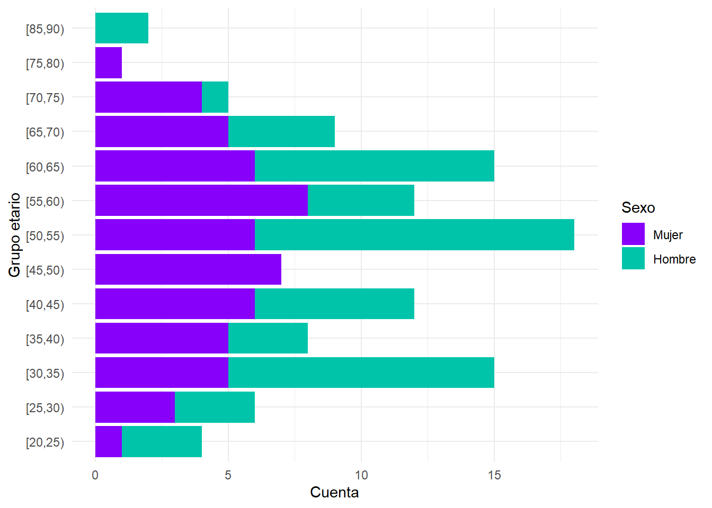
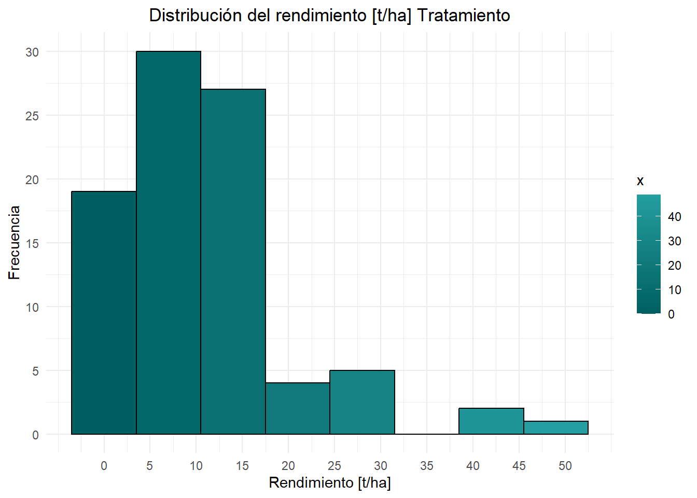
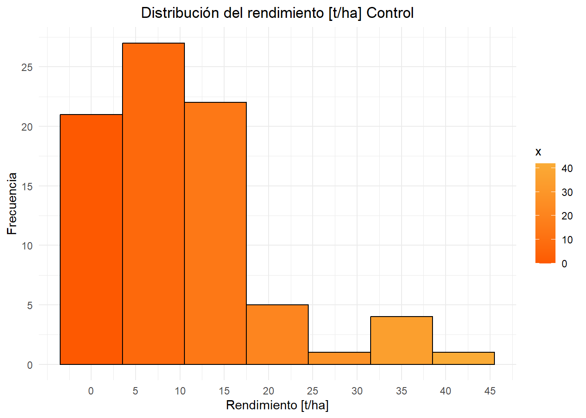
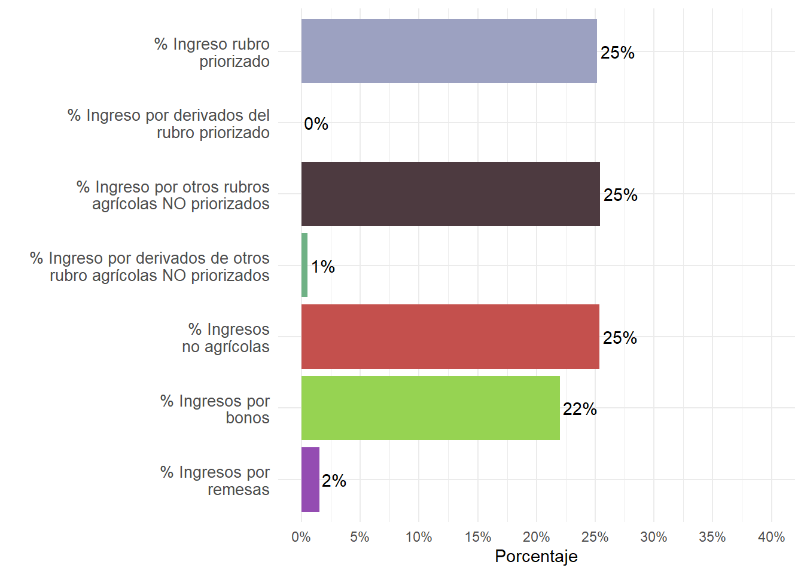

| Indicador | Tratamiento | Control |
|---|---|---|
| Índice de Pobreza Multidimensional (IPM) | 24.34 | 38.03 |
| Índice de resiliencia externa (IRe) | 58.78 | 37.53 |
| Índice de resiliencia interna (IRi) | 46.49 | 49.07 |
| Ingreso bruto promedio [BOB/año] | 19,103 | 20,701 |
| Ingreso neto promedio [BOB/año] | -9,278 | 1,868 |
| Rendimiento promedio [t/ha] | 10.8 | 10.47 |
| Pérdida promedio [%] | 7.89% | 8.06% |
1 Antecedentes
El proyecto Mercados Inclusivos genera información de los rubros productivos en los que interviene de manera continua para analizar los efectos y los impactos de sus intervenciones. La segunda fase del proyecto incluye dentro de su rango de acción a la zona de los valles cruceños (Samaipata, Mairana, Pampa Grande, Vallegrande, Comarapa y Saipina).
Como estrategia de evaluación del proyecto, se toma la información de un grupo de tratamiento (que acceden al proyecto) y un grupo de control (que no accede al proyecto). Se toma información del grupo de control pues sus datos nos serán útiles al momento de evaluar el proyecto comparando las mejoras entre estos dos grupos, generando la posibilidad de atribuir cambios a las intervenciones del proyecto.
Para el rubro papa, la muestra de 112 productores del grupo de tratamiento fue obtenida en las comunidades de Pampa y San Isidro en Comarapa, la comunidad Chilón en Saipina, Palmasola, Los Negros y el Pacay en Pampa Grande, comunidad Kallana en Vallegrande y la comunidad Bella Victoria en Samaipata. Para el grupo de control se realizó la encuesta a 112 productores en los municipios de Moromoro, Qurusillas y Pucará. Para ambos grupos, se contó con un 34% de mujeres identificadas como productoras principales.
Por el alcance del estudio y el tamaño de la muestra, se puede afirmar que los datos mostrados en las siguientes secciones representan los datos medios de toda la región de los valles cruceños para el rubro de papa. Para resultados generales a nivel proyecto, ingresar acá.
2 Indicadores de propósito
A continuación se muestran los principales resultados entorno a los indicadores de efectos e impactos del proyecto mercados inclusivos, diferenciados en cada caso entre grupo tratamiento y grupo control.
El IPM sitúa al grupo de control en una peor situación que el grupo de tratamiento, mostrando una mayor proporción de pobres multidimensionales (menor el valor, menor la proporción de pobres multidimensionales) Respecto a la resiliencia, el grupo de control muestra, ligeramente, una mayor resiliencia externa (mayor el valor, mayor la resiliencia).
3 Indicadores demográficos
Edad

Educación
| Categoria Educación | Tratamiento cuenta | Tratamiento % | Control cuenta | Control % |
|---|---|---|---|---|
| Educación primaria 0-6 años | 62 | 70.5% | 58 | 71.6% |
| Educación secundaria 7-12 años | 18 | 20.5% | 19 | 23.5% |
| Educación superior 13+ años | 8 | 9.1% | 4 | 4.9% |
| Total | 88 | 100.0% | 81 | 100.0% |
| Categoria Educación | % tratamiento hombres | % tratamiento mujeres | % control hombres | % control mujeres |
|---|---|---|---|---|
| Educación primaria 0-6 años | 75.9% | 60.0% | 72.2% | 70.4% |
| Educación secundaria 7-12 años | 17.2% | 26.7% | 25.9% | 18.5% |
| Educación superior 13+ años | 6.9% | 13.3% | 1.9% | 11.1% |
4 Indicadores productivos
Variedades
| Variedades | Tratamiento cuenta | Tratamiento % | Control cuenta | Control % |
|---|---|---|---|---|
| Holandesa Desirée | 91 | 81.2% | 104 | 92.9% |
| Huaycha | 11 | 9.8% | NA | NA |
| Otras | 10 | 8.9% | 8 | 7.1% |
| Total | 112 | 100.0% | 112 | 100.0% |
Superficie
La superficie promedio de los productores es de 1.2 [ha]; la distribución por categorías se muestra en la Tabla 5:
| Superficie | Tratamiento cuenta | Tratamiento % | Control cuenta | Control % |
|---|---|---|---|---|
| Menor a 0.5 [ha] | 28 | 31.8% | 25 | 30.9% |
| Entre 0.5 a 1 [ha] | 32 | 36.4% | 29 | 35.8% |
| Entre 1 y 2 [ha] | 20 | 22.7% | 23 | 28.4% |
| Mayor a 2 [ha] | 8 | 9.1% | 4 | 4.9% |
| Total | 88 | 100.0% | 81 | 100.0% |
Rendimiento
Se cuenta con una media de rendimientos de 10.8 [t/ha] para el grupo de tratamiento y de 10.5 [t/ha] para el grupo de control. Sus distribuciones se muestran en la Figura 2 y la Figura 3.


Riego
| Riego | Tratamiento cuenta | Tratamiento % | Control cuenta | Control % |
|---|---|---|---|---|
| Tiene sistema de riego | 82 | 93.2% | 51 | 63.0% |
| Secano | 6 | 6.8% | 30 | 37.0% |
| Total | 88 | 100.0% | 81 | 100.0% |
| Tipo de Riego | Tratamiento cuenta | Tratamiento % | Control cuenta | Control % |
|---|---|---|---|---|
| Gravedad | 55 | 53.4% | 28 | 38.4% |
| Goteo | 31 | 30.1% | 11 | 15.1% |
| Aspersión | 10 | 9.7% | 32 | 43.8% |
| Otros | 7 | 6.8% | 2 | 2.7% |
| Total | 103 | 100.0% | 73 | 100.0% |
| Uso de Fertiriego | Tratamiento cuenta | Tratamiento % | Control cuenta | Control % |
|---|---|---|---|---|
| No usa fertiriego | 78 | 75.7% | 61 | 83.6% |
| Si usa fertiriego | 25 | 24.3% | 12 | 16.4% |
| Total | 103 | 100.0% | 73 | 100.0% |
Uso de semilla certificada
| Uso de semilla certificada | Tratamiento cuenta | Tratamiento % | Control cuenta | Control % |
|---|---|---|---|---|
| Utiliza semilla convencional | 62 | 55.4% | 35 | 31.2% |
| Utiliza semilla certificada | 50 | 44.6% | 77 | 68.8% |
| Total | 112 | 100.0% | 112 | 100.0% |
Otras variedades importantes en la zona
| Variedad | frecuencia | porcentaje |
|---|---|---|
| MAIZ | 29 | 22.7% |
| PIMENTON | 15 | 11.7% |
| POROTO | 10 | 7.8% |
| FREJOL | 7 | 5.5% |
| SANDIA | 7 | 5.5% |
| TOMATE | 7 | 5.5% |
| Otros | 53 | 41.4% |
5 Acceso a servicios
| Servicio | Proveedor | Accede | Aplica | Mejora |
|---|---|---|---|---|
| Capacitación o asistencia en temas productivos | 27% | 20% | 87% | 90% |
| Cursos de instituciones públicas o privadas de formación técnica para productores | 21% | 17% | 84% | 88% |
| Insumos | 54% | 55% | 91% | 92% |
| Información de mercado | 8% | 4% | 50% | 100% |
| Capacitación/promotores de innovaciones, buenas prácticas para la mitigación adaptación al cambio climático | 4% | 4% | 67% | 83% |
| Información meteorológica | 9% | 14% | 72% | 87% |
| Tecnología | 32% | 28% | 92% | 96% |
| Crédito productivo | 34% | 26% | 74% | 93% |
| Servicios de Ahorros | 25% | 12% | 89% | 96% |
| Seguro (agrícola, personal y/o de bienes) | 12% | 7% | 62% | 80% |
| Educación financiera | 9% | 4% | 62% | 80% |
Esta tabla se debe leer de la siguiente manera: En la zona del estudio, el 27% de las UPF declararon que existen proveedores de “Capacitación o asistencia en temas productivos” cercanos a sus domicilios o actividades productivas. De ellos, el 20% declararon que acceden a este servicio. De este porcentaje que accede al servicio, el 87% aseguró que aplica el servicio y el 90% de los que aplicaron declaró que mejoraron sus rendimientos/ingresos y/o reducieron sus costos/pérdidas.
6 Composición del ingreso
